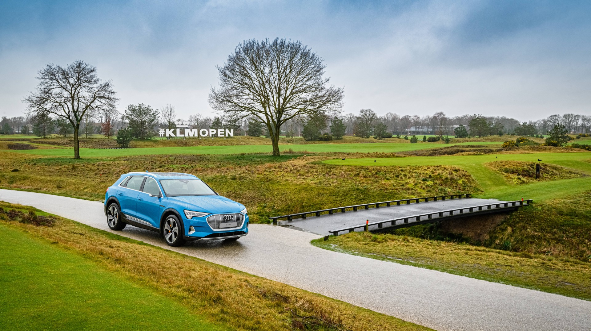
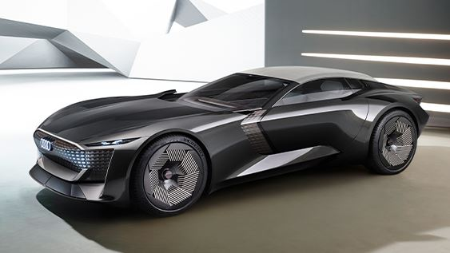
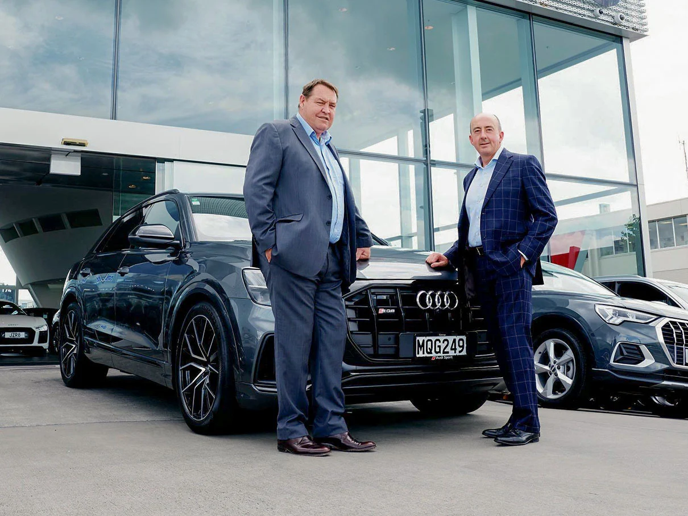

Onze Toewijding aan Duurzaamheid
Welkom op de duurzaamheidsbestemming van Audi, waar innovatie en verantwoordelijkheid hand in hand gaan. Bij Audi streven we ernaar de weg te banen naar een groenere toekomst door de manier waarop we rijden en produceren te transformeren. Ontdek hier hoe we ons inzetten voor duurzaamheid en hoe u samen met ons kunt bijdragen aan een milieuvriendelijkere wereld.
Elektrificatie en Duurzame Mobiliteit
Audi E-Tron Serie
Duurzaamheid begint met elektrificatie. Maak kennis met onze Audi e-Tron serie, waar we elektrische en plug-in hybride voertuigen hebben gecreëerd die niet alleen krachtige prestaties leveren, maar ook emissievrij rijden mogelijk maken. Verken de voordelen van elektrische mobiliteit en ontdek hoe Audi de transitie naar een groenere mobiliteit stimuleert.
Circulaire Economie en Hergebruik
In onze streven naar duurzaamheid omarmen we de circulaire economie. Ontdek hoe we materialen hergebruiken en recyclen om afval te verminderen en duurzame productieprocessen te bevorderen. Leer meer over onze inspanningen om de impact van onze productie op het milieu te minimaliseren.
Slimme Technologie voor een Duurzamere Wereld
Bij Audi omarmen we voortdurend innovatie. Ontdek onze nieuwste duurzaamheidstechnologieën, van alternatieve brandstoffen tot slimme energiebeheersystemen. Leer hoe we de grenzen verleggen van wat mogelijk is om een duurzamere toekomst te creëren.
Gemeenschap, Partners en Belanghebbenden
Duurzaamheid bereiken we samen. Ontdek hoe Audi samenwerkt met gemeenschappen, partners en belanghebbenden om gezamenlijk duurzame oplossingen te ontwikkelen. Leer meer over ons maatschappelijk verantwoord ondernemen en ontdek hoe u deel kunt uitmaken van onze inspanningen om een positieve impact te hebben. Bij Audi is duurzaamheid niet alleen een doel, het is onze toekomst. Stap in de wereld van groene mobiliteit en ontdek hoe u met Audi de weg kunt effenen naar een groenere en duurzamere toekomst. Samen bouwen we aan een wereld waarin rijplezier en verantwoordelijkheid samenkomen.
